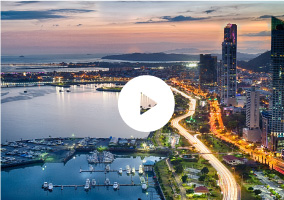

<section class="detalle col-100">
    <div class="center-container">
        <ul class="detail-content">
            <li>
                <h3>incluye</h3>
                <div class="detail-item"></div>
            </li>
            <li>
                <h3>itinerario</h3>
                <div class="detail-item">
                    <h3>Día 1 : ESTAMBUL</h3>
                    <p>Llegada, recepción y traslado desde el aeropuerto Ataturk de Estambul al hotel. Alojamiento.</p>
                    <h3>Día 2 : ESTAMBUL</h3>
                    <p>Desayuno. Salida para un tour panorámico por la parte antigua de Estambul con paradas para admirar la bella vista del Cuerno de Oro en Pierre Loti y visitar la Catedral de San Jorge, la Iglesia Ortodoxa Patriarcal Griega y sede del Patriarcado. Tarde libre. Excursión opcional de medio día con almuerzo incluido: al Bazar de las Especias, construido en 1660, donde se comercializaban especias importadas de Egipto. Después del almuerzo en un restaurante de mariscos, se embarcan en un viaje fascinante en las aguas del Bósforo, el estrecho que separa las partes europea y asiática, para apreciar las preciosas villas otomanas, el Palacio Dolmabahce, Ciragan Beylerbeyi y la fortaleza Rumeli Hisari etc. Alojamiento.</p>
                    <h3>Día 3 : ESTAMBUL</h3>
                    <p>Desayuno. Día libre. Excursión guiada opcional en Estambul "JOYAS DE CONSTANTINOPLA" con almuerzo en restaurante de comidas típicas, Topkapi Palace, Santa Sophia es considerada una obra maestra de la arquitectura mundial desde el siglo V, hoy presenta referencias religiosas cristianas y musulmanas mezcladas después de la conversión de la basílica en una mezquita y luego en museo, El Hipódromo Romano, La Mezquita del Sultán Ahmet (mezquita azul) con sus seis minaretes y decorado con azulejos de color turquesa. Seguimos al famoso Gran Bazar, un mercado de paredes y cúpulas seculares. Alojamiento.</p>
                    <h3>Día 4 : ESTAMBUL - ANKARA - CAPADOCIA</h3>
                    <p>Desayuno en el hotel y salida temprano en autobús hacia Ankara y visita de la capital de Turquía y del Mausoleo del Fundador de la república. Llegada a Capadocia. Cena y alojamiento.</p>
                    <h3>Día 5 : CAPADOCIA</h3>
                    <p>Desayuno. Salida para visitar esta fantástica región con su fascinante y original paisaje, formado por lava arrojada por los Volcanes Erciyes y Hasan hace 3 millones de años. Visita de una ciudad subterránea construidas por las antiguas comunidades locales, el Valle de Pasabag o Çavusin, Avcilar y Güvercinlik y su paisaje espectacular de las Chimeneas de Hadas, las capillas de Goreme, museo en aire libre. Visitaremos un taller de alfombras y joyerías. Cena y alojamiento. Posibilidad de realizar programas opcionales en Capadocia como la Noche turca. Show de danzas folclóricas en una cueva típica y Paseo en Globo al amanecer para admirar uno de los paisajes más lindos de la tierra.</p>
                    <h3>Día 6 : CAPADOCIA - PAMUKKALE</h3>
                    <p>Desayuno. Salida hasta Pamukkale para visitar la antigua Hierápolis y el Castillo de Algodón, verdadera maravilla natural, una cascada gigante, estalactitas y piscinas naturales formadas a través de los siglos por el paso de las aguas termales cargadas de sales calcáreas. Cena y alojamiento.</p>
                    <h3>Día 7 : PAMUKKALE - EFESO - KUSADASI</h3>
                    <p>Desayuno. Salida hacia Éfeso, la ciudad greco-romana mejor conservada de Asia Menor desde los siglos I y II, que monopolizó la riqueza de Medio Oriente y guarda tesoros como el impresionante teatro romano, la magnífica biblioteca de Celso y la calle de Mármol. Visitaremos la Casa de la Virgen María, supuesta última morada de la madre de Jesús, y hoy es considerada un punto de peregrinación. Continuación hacia Kusadasi en el Mar Egeo y visita un taller de pieles y a un outlet de marcas internacionales. Cena y alojamiento.</p>
                </div>
            </li>
            <li>
                <h3>multimedia</h3>
                <div class="detail-item">
                    <ul class="col-100 multimedia">
                        <li class="col-25"></li>
                        <li class="col-25"></li>
                        <li class="col-25"></li>
                        <li class="col-25"></li>
                        <li class="col-25"></li>
                        <li class="col-25"></li>
                        <li class="col-25"></li>
                        <li class="col-25"></li>
                        <li class="col-25"></li>
                        <li class="col-25"></li>
                        <li class="col-25"></li>
                        <li class="col-25"></li>
                    </ul>
                </div>
            </li>
        </ul>
        
    </div>
</section>
